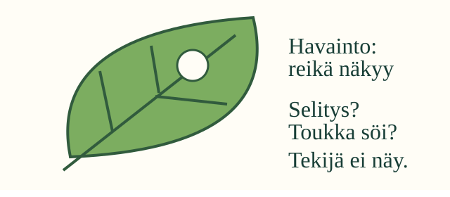
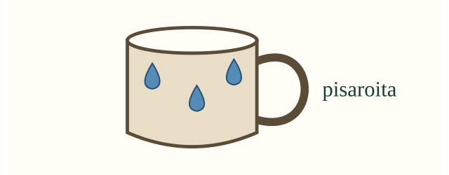

Aava löytää lehden, jossa on reikä. Söikö toukka sen? Otetaan ensin selvää, mitä oikeasti huomataan.
Mitä huomaat?
Tavoitteesi: Huomaat kohteesta jotakin ja erotat havainnon mahdollisesta selityksestä.
Katso rauhassa. Etsi yksi näkyvä asia. Havainto on asia, jonka huomaat aisteilla. Selitys kertoo, mistä asia voisi johtua.
1. Reikä ei kerro tekijää

”Lehdessä on reikä” näkyy. ”Toukka teki reiän” voi olla selitys. Emme vielä tiedä tekijää.
Reikä voisi tulla myös repeämästä. Selitystä saa miettiä. Sitä pitää tutkia lisää ennen kuin sen tietää.
2. Kuvasta ei voi tuntea

”Mukin pinnalla on pisaroita” on havainto kuvasta.
”Muki tuntuu kylmältä” vaatii tuntoaistia. Kuvasta sitä ei voi tuntea. Myöskään pisaroiden syytä ei vielä tiedetä.
Mieti hetki: Näkyykö reiän tekijä lehtikuvassa? Mitä muuta haluaisit tutkia?
Yksi ajatus
Tekijää ei näy. Voit pyytää aikuista katsomaan lehden toista puolta kanssasi. Sieltäkin voi löytyä havaintoja. Ne eivät aina paljasta tekijää.
Tarvitsen apua
Kysy: voinko osoittaa tämän asian kuvasta? Reiän voi osoittaa. Tekijää ei näy. Kuvasta ei voi kuulla ääntä eikä tuntea pintaa.
Kokeile aisteilla aikuisen kanssa
Ota tuttu, puhdas paperi. Katso sitä. Jos haluat, tunnustele pintaa ja rapista paperia hiljaa. Mitä näet? Mitä tunnet? Mitä kuulet? Voit osoittaa tai kertoa yhden asian.
Maistamista tai haistamista ei tarvita. Älä koske tai vie suuhun tuntemattomia kasveja, sieniä tai aineita. Pyydä aikuinen avuksi. Kuvan mukiin ei tarvitse koskea.
Lisäpohdinta
Jos lehden takana näkyisi toukka, tietäisimmekö varmasti sen tehneen reiän? Toukka olisi uusi havainto. Reiän syntyä pitäisi silti tutkia lisää.
Opettajalle
Luokat 1–2. Kanoninen tavoite on havainnon tekeminen ilmiöstä tai kohteesta. Graafi ei aseta pakollisia eikä vahvoja esitietoja. Havainnon lyhyt kuvaus on tässä mallinnettua tukea; omaa kuvailua tai kirjaamista ei arvioida. Lue tarvittaessa. Älä edellytä esineen tai muodon nimeämistä, puheen vahvistamista, kuulemista tai koskettamista.
Aloita turvallisen arkiesineen yhteisellä tarkastelulla, jatka kuviin ja sanoihin havainto/mahdollinen selitys. Havainto ei rajoitu näköön: kuulo ja tunto voivat tuottaa havaintoja oikeassa tilanteessa. Älä opeta, että kaikki päätelmät ovat vääriä; niiden perustaksi tarvitaan havaintoja. Piirroksen kääntäminen paljastaa ennalta piirrettyä tietoa. Ruutuvalinta ei todenna fyysisen havainnon tekemistä, aistitoimintoja, turvallista työskentelyä tai pysyvää osaamista. Vastauksia ei tallenneta.
Lähtökysymys: Kerro tai osoita yksi havainto läheisestä turvallisesta kohteesta. Mikä asia jää vielä kysymykseksi?
 Aava löytää lehden, jossa on reikä. Söikö toukka sen? Otetaan ensin selvää, mitä oikeasti huomataan.
Aava löytää lehden, jossa on reikä. Söikö toukka sen? Otetaan ensin selvää, mitä oikeasti huomataan.